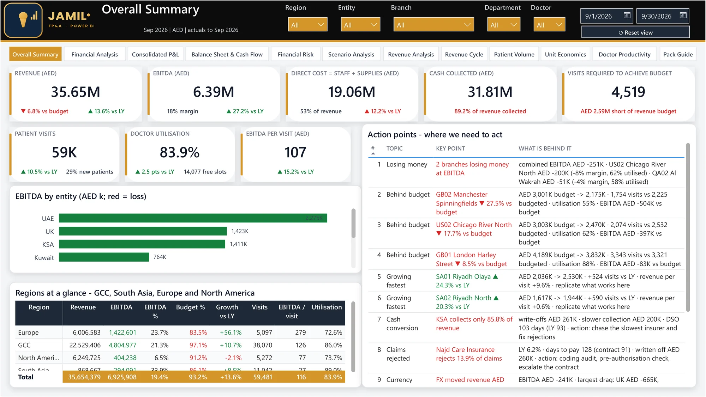

Multi-Country Healthcare FP&A Pack
Did we grow, or did the currencies move? How far are we from budget, and why is cash behind revenue?

All 13 report pages at a glance
September 2026 view · click a card to open it above · ← → keys and swipe work tooOne AED number was hiding three different stories
Ravaan (a fictional group I built end to end) runs 18 clinics in 8 currencies and reports one consolidated AED figure. Management could see revenue up 14% and EBITDA AED 10.7m behind budget, but not why. Currency moves blurred real growth, and insurance claims meant revenue earned in March might be paid in July, or rejected. Every follow-up question became a new spreadsheet.
Did we grow, or did the currencies move?
And is the gap to budget revenue or cost?
Why is cash below revenue in Saudi Arabia?
Slow insurers, rejected claims or weak sales: each has a different owner.
Which clinics and doctors earn the profit?
And which ones need a decision this quarter?
Open a clinic, raise prices, or close one?
What does each decision do to group EBITDA?
Built like a real group, checked like an audit
- Generate the business from drivers, not random totalsDoctors, slots, utilisation, tariffs, payer mix, contract discounts, rejection rates, payment lags, rent, salaries and FX. Every total has a business cause, so every story can be traced.
- Consolidate properly (IAS 21 / IFRS 10)P&L at monthly average rates, balance sheet at closing rates, equity at historical rates, the difference in a translation reserve. The 4% head-office fee and investments are eliminated.
- Keep revenue and cash apartVisit, claim, approval or rejection, and cash are four separate events: the only way to tell slow payers from rejected claims from weak sales.
- Design every page around a decisionTiles with ▲▼ against budget and last year, bridges that explain the movement, key messages and an action table with an owner. Navy actual, grey last year, red only for adverse.
- Prove the numbers before anyone reads themA Data Checks page recomputes 13 totals; the pack is only published when the gate shows PASS.
| Country | Clinics | Currency | Why it matters |
|---|---|---|---|
| UAE (head office) | 4 | AED | Reporting currency |
| Saudi Arabia · Qatar · USA | 3 · 2 · 2 | SAR · QAR · USD | Pegged to the dollar |
| Kuwait | 2 | KWD | Basket peg |
| Pakistan · Afghanistan · UK | 2 · 1 · 2 | PKR · AFN · GBP | Floating: where translation hurts |
Not a revenue problem: a payer and capacity problem
The cash bridge splits the gap between revenue and cash into three causes with three different owners: AED 8.8m of rejected claims written off, AED 1.6m of extra receivables from growth (healthy), and AED 2.2m held back by slower insurers. That turns one worrying number into four concrete decisions:
Re-code or renegotiate Najd Care claims
Rejections doubled from 6.4% to 13.9%; KSA DSO rose from 93 to 103 days. Each point of rejections removed is worth about AED 1.7m EBITDA a year.
A 90-day plan for Chicago and Al Wakrah
Both lose money: Chicago lost a dermatologist and its patients; Al Wakrah runs at about half capacity. Fix utilisation before considering closure.
Judge the UK and Pakistan in constant currency
Pakistan grew 28.1% in rupees but 18.6% in AED; the UK 55.9% in sterling, 48.9% in AED. Managers shouldn't be blamed for exchange rates.
Reschedule before hiring; give Manchester time
28 doctors sit below 65% utilisation, and the new Manchester clinic is tracked against a ramp-up curve, not judged as a failure.
Try the levers yourself
Sensitivities from the pack's own Scenario page (EBITDA effect of a 5% favourable move), applied in a straight line to September.
The insight for the board: a 1% price increase negotiated with payers is worth as much as a 12.6% cut in rent.
Ravaan Medical Group is fictional; all clinics, insurers, doctors and figures were generated for this case study.